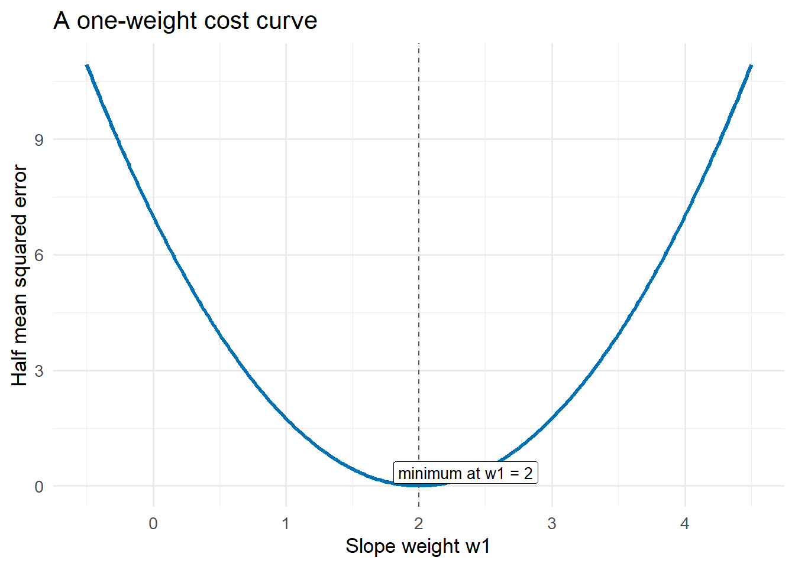
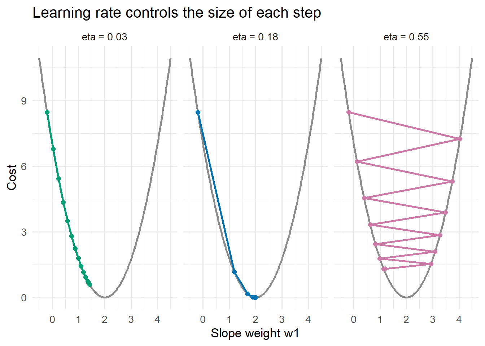
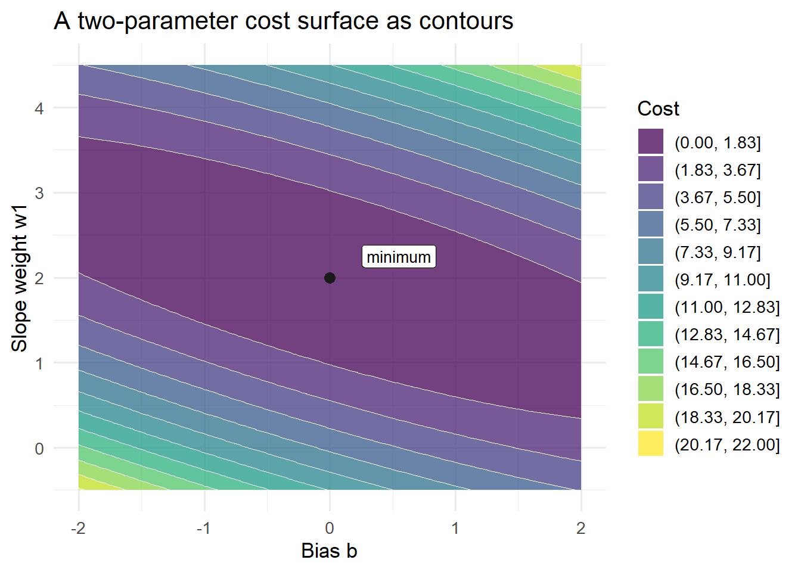

Show simple data code
dat <- linear_example_data()
knitr::kable(dat)| x | y |
|---|---|
| 0 | 0 |
| 1 | 2 |
| 2 | 4 |
| 3 | 6 |
Training a neural network means choosing the weights and biases. In a small model, one might hope to solve for the best parameters analytically. In a neural network, this becomes unrealistic very quickly.
Even a modest network can have many weights. A modern network can have millions or billions. We therefore need an iterative approach.
The central idea is:
choose a loss function, then move the parameters in a direction that makes the loss smaller.
A loss function measures how badly the model predicts. The correct loss depends on the problem.
For regression, a common choice is squared error:
\[ C(\mathbf{w}, b) = \frac{1}{2n} \sum_{i=1}^n \left(y_i - \hat{y}_i\right)^2. \]
For binary classification, a common choice is cross-entropy:
\[ C(\mathbf{w}, b) = -\frac{1}{n} \sum_{i=1}^n \left[ y_i\log(\hat{p}_i) + (1-y_i)\log(1-\hat{p}_i) \right]. \]
The loss is the quantity the training algorithm tries to minimise.
These choices connect back to the single-neuron examples. A linear output unit trained with squared error is linear regression. A sigmoid output unit trained with cross-entropy is logistic regression. A threshold perceptron does not fit either of these smooth losses in its basic form; it uses a direct mistake-correction rule instead.
This is also the cleanest way to compare the perceptron with the SVM. Both use a linear score and a sign decision, but they optimise different criteria. The perceptron reacts to mistakes. The SVM searches for a boundary with a margin.
Let us begin with the smallest possible regression example. Suppose the true relationship is
\[ y = 0 + 2x. \]
The data are:
dat <- linear_example_data()
knitr::kable(dat)| x | y |
|---|---|
| 0 | 0 |
| 1 | 2 |
| 2 | 4 |
| 3 | 6 |
Now suppose we fix \(b = 0\) and try different values of \(w_1\) in
\[ \hat{y} = b + w_1x. \]
candidate_w1 <- c(0, 0.5, 1, 2, 2.5)
cost_table <- data.frame(
w1 = candidate_w1,
cost = vapply(candidate_w1, function(v) linear_cost(0, v), numeric(1))
)
knitr::kable(cost_table)| w1 | cost |
|---|---|
| 0.0 | 7.0000 |
| 0.5 | 3.9375 |
| 1.0 | 1.7500 |
| 2.0 | 0.0000 |
| 2.5 | 0.4375 |
The loss is smallest when \(w_1 = 2\), as expected.

This is the easiest version of training. We can see the whole cost curve and identify the best weight by inspection. Neural networks are too large for this visual inspection, but the idea remains the same.
Gradient descent updates each weight using the slope of the loss function:
\[ w_j \leftarrow w_j - \eta \frac{\partial C(\mathbf{w}, b)}{\partial w_j}. \]
Here \(\eta\) is the learning rate. The bias \(b\) is updated in the same way, using its own derivative.
The partial derivative tells us the direction of steepest local increase in the loss. The minus sign means we move in the opposite direction, toward lower loss.
The learning rate determines the size of the step:

With two parameters, the loss is a surface rather than a curve. The same idea still applies. Gradient descent moves across this surface towards smaller loss.

In a neural network, the surface exists in a high-dimensional parameter space. We cannot draw it, but gradient descent still uses local slope information to decide how to move.
There are several ways to compute the gradient.
Batch gradient descent computes the gradient using all training observations before updating the parameters. This is stable, but can be slow for large datasets.
Stochastic gradient descent updates the parameters after one training observation. This is faster per update and can work well at scale, but the updates are noisy.
Mini-batch gradient descent is a compromise. It computes the gradient on a small batch of observations, such as 32, 64, or 128 observations, then updates the parameters.
The modern default is usually mini-batch learning.
Gradient descent is sensitive to the scale of the predictors. If one predictor is measured in thousands and another in decimals, the corresponding weights can learn at very different rates.
For this reason, neural-network predictors are usually standardised:
\[ x_{ij}^{std} = \frac{x_{ij} - \bar{x}_j}{s_j}. \]
That is, each input variable is centred at zero and scaled to have standard deviation one.
Training a neural network requires three separate choices:
Gradient descent is the basic optimisation idea. Backpropagation is the efficient way to compute the gradients needed by gradient descent in a multilayer network.